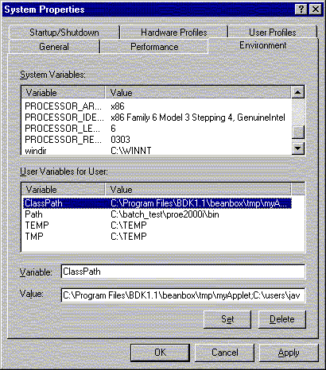

Download Java Foundation Classes (Swing)
To download and install the Java Foundation Class (Swing) archive, follow these instructions:
Downloading the Java Foundation Class (Swing) Archive
- Go to the
Java Foundation Class Download Page.
- Go to the heading Downloading the JFC/Swing X.X.X Release, where X.X.X is the latest JFC version.
- Click on the
standard TAR or ZIP file link to go to the heading
Download the Standard Version.
NOTE: DO NOT download the "installer" version.
- Select a file format, click Continue, and follow the download
instructions on the subsequent pages.
- Uncompress the downloaded bundle.
Modifying the Java Class Path.
In the swing-X.X.Xfcs directory (where X.X.X is the version of the downloaded JFC)
created when uncompressing the bundle, locate the swingall.jar archive.
Add this arcive to the Java Class Path.
Click the appropriate link for instructions on adding this archive to the Java Class Path:
Modifying the Java Class Path on UNIX Platforms
Follow these steps to make the Java Foundation Class (Swing)
available in UNIX shell environments:
- If the CLASSPATH environment variable exists, then add
the following line to the end of file ~/.cshrc
- setenv CLASSPATH "${CLASSPATH}:[path_to_swingall.jar]"
Otherwise, add the following line to ~/.cshrc
- setenv CLASSPATH ".:[path_to_swingall.jar]"
- Save and close ~/.cshrc.
- Enter the following command:
- source ~/.cshrc
This sets the CLASSPATH environment variable in the current shell. All
new shells will be also be affected.
Close and restart your internet browser from an affected shell.
Modifying the Java Class Path on NT Platforms
Follow these steps to make the Java Foundation Class (Swing)
available on Windows NT Platforms:
- Click on Start -- Settings -- Control Panel.
- In the System Properties window, select the Environment tab.
- Check in the User Variables display area for the ClassPath variable. See Figure 1.
Figure 1: The Windows NT Enviroment Variable Display Window

- If the ClassPath variable exists, then follow these steps:
- Click on ClassPath in the Variable column. The value of
ClassPath will appear in the Value text field.
- Append the path to the swingall.jar archive to the current value of ClassPath:
- ...;[path_to_swingall_archive];.
Note the use of the semicolon as the path delimiter before and after the path to the
archive, and the period (.) at the end of the varible definition. There must be only one
semicolon-period ";." entry in the ClassPath variable, and it should appear at the end of
the class path.
If the ClassPath variable does not exist, then follow these steps:
- Click the Set button.
- Click the Apply button.
- Click the OK button.
Close and restart your internet browser. You do not need to reboot your machine.